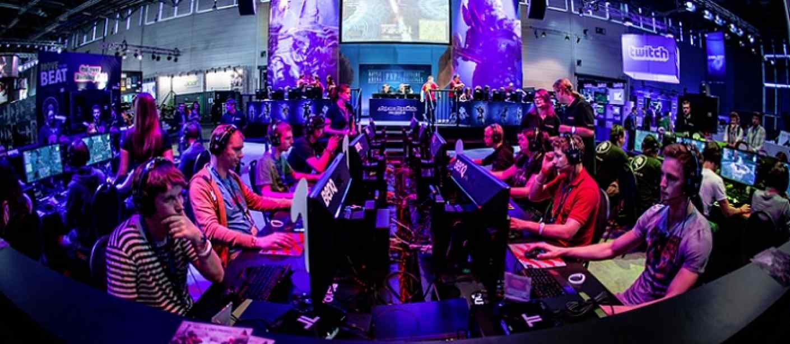
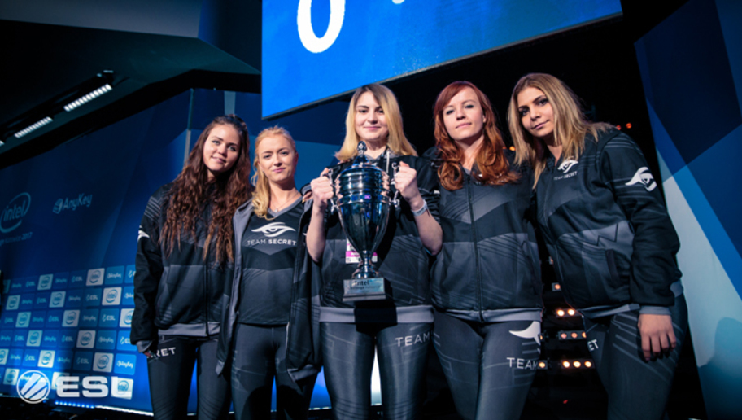

eSports
What is eSports?
eSports or electronic sports is one the sports that is rapidly rising in popularity – it consists of professional players competitively gaming using computers, consoles, or mobile phones.
Nowadays, the eSports industry keeps getting larger and is expanding at an alarming rate – to illustrate this scale, The International, Dota 2’s biggest tournament had a prize pool of around £16,000,000.00 just for last year’s tournament 2016 and this year, the prize pool is still increasing.
This is only one of the esports games that is being held, there’s also League of Legends, Counter Strike Global Offensive, Call of Duty and many more games in the industry that organise tournaments with high prize pools for gamers to compete in.
eSports as a career
Although playing computer games sounds a very easy job and a dream come true, competitors still needs to put a lot of effort and training to keep their edge between normal players. And even when the industry is blooming there’s still a lack of women in the scene. Because of this, you’ll have a better chance being discovered and going professional. By doing so, women teams will also be able to participate in those big prize pool tournaments and gain as much sponsorships and credits that men get.

